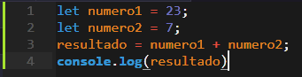

Tratemos de contextualizarte un poco sobre qué es la programación, a través de un concepto que por muy básico que sea define en pocas palabras lo que es la programación en la práctica, un poquito de historia, un ejemplo de su funcionamiento y por último un despligue de las posibilidades que existen hechas texto, ya lo verás.

¿Qué es la programación?
5min de lectura
Por: Gabriel.M
La programación es y consiste en darle instrucciones a una computadora mediante algoritmos (un algoritmo es un conjunto de pasos estructurados con el fin de encontrar una solucion a un problema) escritos con líneas de código del lenguaje de programación adecuado.

Este seria una simple suma entre dos numeros, declaramos los numeros en las primeras dos lineas, los sumamos en la tercera y en la cuarta mostramos el resultado, esto es hecho en el lenguaje de programacion JavaScript.
Cuando se piensa en la progamación y no se tiene mucho conocimiento sobre el tema, se suele pensar que programar siempre se ha visto como en la imagen anterior, y no puede ser mas diferente. Con la aparición de las primeras computadoras entre los años 1840 y 1850 surgió uno de los métodos más conocidos de programación, "las tarjetas perforadas". Estas son láminas de cartulina que contienen información en forma de perforaciones según el código binario. A pesar de esto, el objetivo era el mismo, hacer que una computadora cumpliera x o y acción mediante nuestras instrucciones, esta forma de ordenar a las computadoras fue evolucionando con el pasar del tiempo y puedes saber mas viendo nuestro artículo de "Historia de la programación".
Puede que te preguntes ¿Y como es darle instrucciones a una computadora? (si no lo hacias pues pregúntatelo y sigue leyendo, gracias), para esto se usa algo llamado "Lógica de la programación" y es una forma de pensar en la que nos planteamos, separamos y resolvemos un problema para posteriormente pasarlo a código. Por ejemplo, si hicieramos un programa cuya función fuera comprar unos doritos, tendríamos que especificarle a la computadora ¿Qué son doritos?, ¿Qué es comprar?, ¿Qué es una tienda?, ¿Dónde queda la tienda?, ¿Cómo puede llegar a la tienda?, ¿Qué es llegar?, toooodo.
Ya para concluir quiero mostrarte un poco de las posibilidades que existen en este mundo de la tecnología.
Existe una variedad increíble de lenguajes de programación como los que podemos ver en la imagen:

Y al igual que existe una infinidad de lenguajes, existe una infinidad de áreas en las que aplicarse.
Entre las áreas que existen podemos encontrar el desarrollo web, los videojuegos, el desarrollo móvil, la seguridad informática, Inteligencia Artificial y demás.
Tambien tenemos los Frameworks, librerías, editores de textos y enternos de desarrollo, que son herramientas que nos ayudan a escribir el código de nuestro programa.
Y por último tendriamos un par de proyectos que existen peeeero no te los mostraré aqui sino en otro artículo de está misma página, titulado "Proyectos Increíbles de la Tecnología"
Este fue un articulo especialmente hecho para personas con poco o nulo conocimiento en el tema, yéndonos por conceptos simples, puntos interesantes y curiosidades llamativas. Si quieres saber más acerca del tema siguenos en nuestras redes sociales y canal de Youtube como "Monlean Brain". Un abrazo.
- Monlean Brain
- Youtube
- monleanbrain@gmail.com